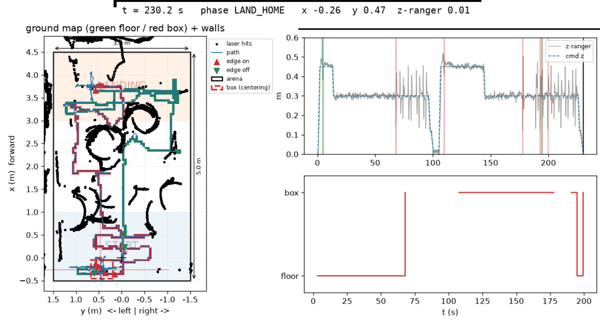
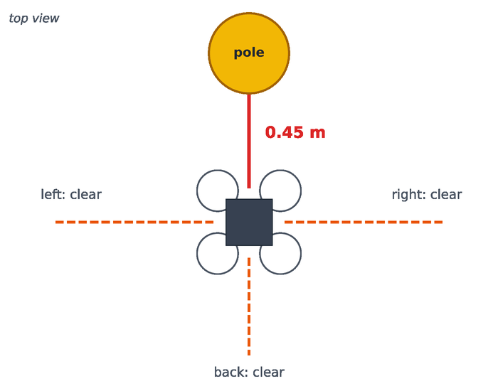
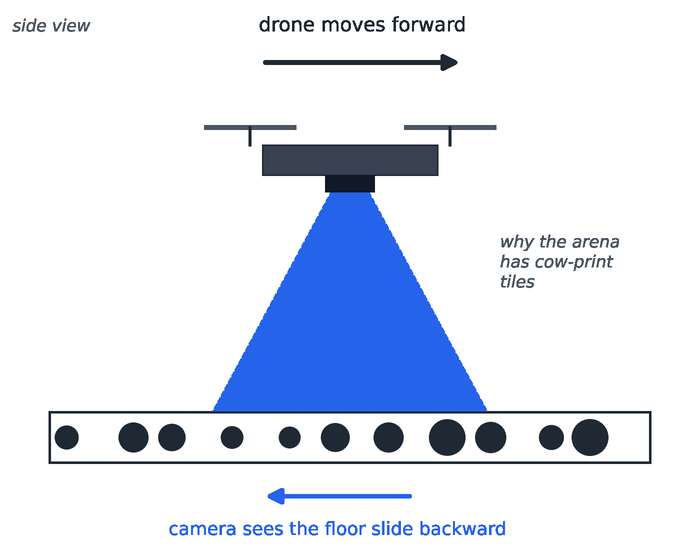
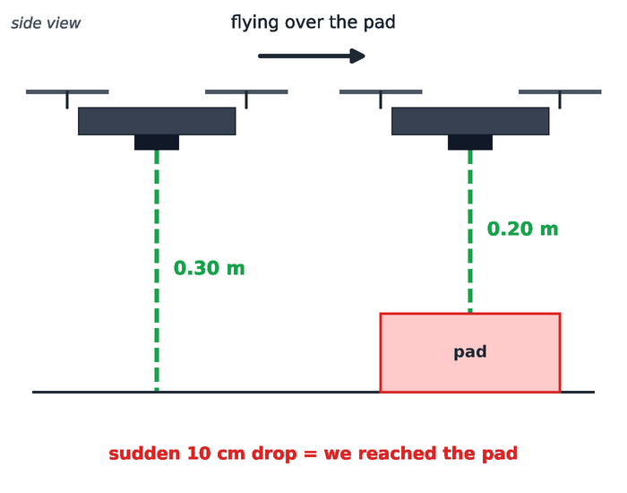
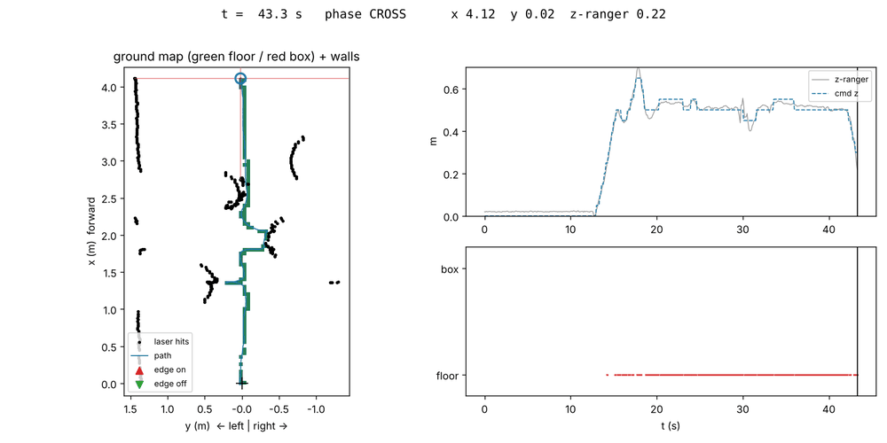
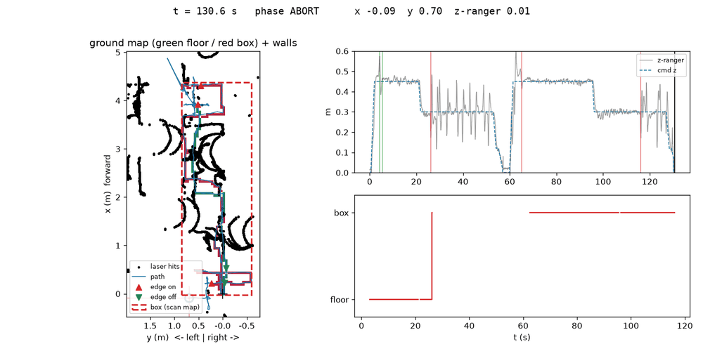

Crazyflie Autonomous Navigation
A fully autonomous mission for a palm-sized Crazyflie quadcopter: take off, cross an arena full of poles, find a landing pad it has never seen, land on its center, then fly back and land on the home pad. Built in Python as a state machine driven by three onboard sensors.
- Course
- MEC 569, Stony Brook
- Team
- Sahil Aggarwal, Isaac Lalicic, Benny Wen
- Language
- Python
- Hardware
- Crazyflie, Flow deck, Multi-ranger deck
Results from the successful run
Taken from the onboard event log of the final run.

The challenge
The arena has a start pad, a field of poles, and a raised landing pad somewhere in a known search region. The drone has no GPS and no camera image to work with. It must cross the obstacles, locate the pad, land on it, take off again, return through the obstacles, and land back on the home pad, all without a human touching the controls.
Strategy: three sensors, three jobs



Mission state machine
The mission is broken into phases. Each phase has one job and hands off to the next, and an ABORT state can land the drone safely from any phase.
- TAKEOFF from the start pad.
- CROSS the arena toward the landing region, avoiding obstacles.
- SEARCH the landing region in a lawnmower sweep until the down laser sees a pad edge.
- CENTER by measuring the pad edges left/right, then up/down, and computing the center.
- LAND on the computed center, then reset the position estimate to the known pad center.
- TAKEOFF 2, RETURN through the obstacles, then SEARCH, CENTER and LAND on the home pad.
Obstacle avoidance
- Safety bubble: if the front laser sees a pole within 50 cm, the drone stops and slides sideways.
- Pass: fly forward while the side laser watches the pole go by, then continue 30 cm further.
- Extra margin: slide an extra 25 cm so the body and propellers clear, not just the sensor.
- Return to lane: slide back to the planned lane only once the pole is fully behind.
Tooling
- logandfly flies the drone and writes a flight log (.csv) and an event log (.txt).
- sim_room runs the real mission code in a simulated room with a fake pad, poles and walls, writing the same log files with no drone involved. This let us test logic changes before risking a flight.
- map_replay reads any log, real or simulated, and draws the top-down map of the path, laser hits and pad detections.
Iterating through failed trials


Intermediate trials surfaced three more issues, each with a targeted fix:
- Looped around a pole → return to the lane only once the pole is behind.
- Searched the middle of the arena → fly straight to the landing region first.
- Searched backward → sweep forward to the far end first.